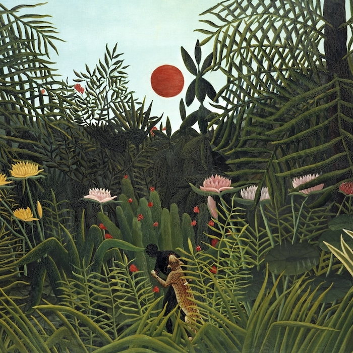
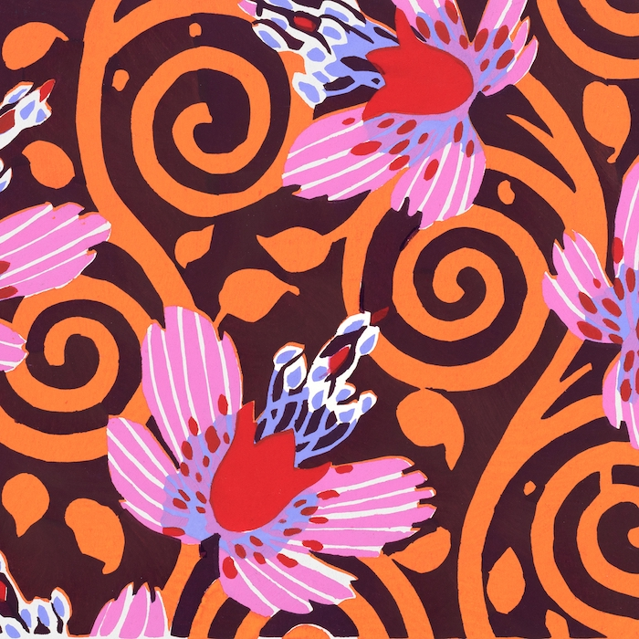
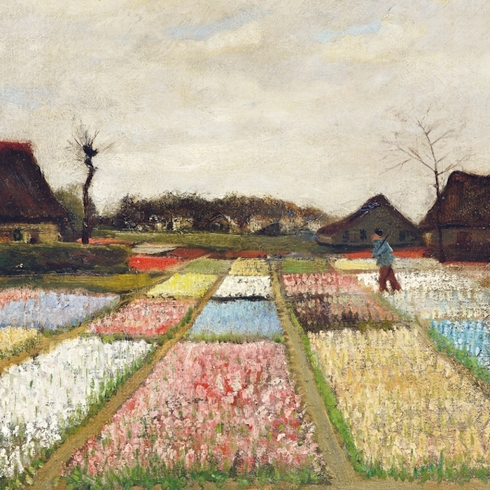
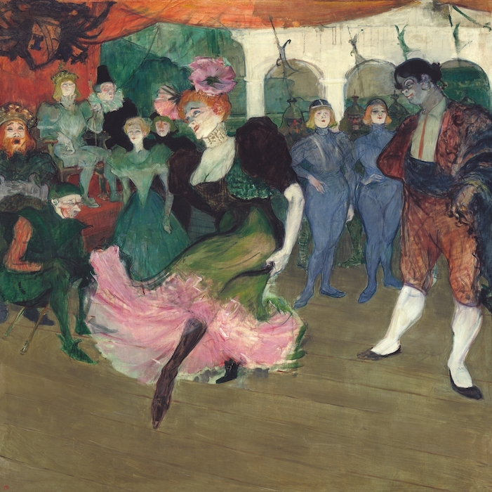
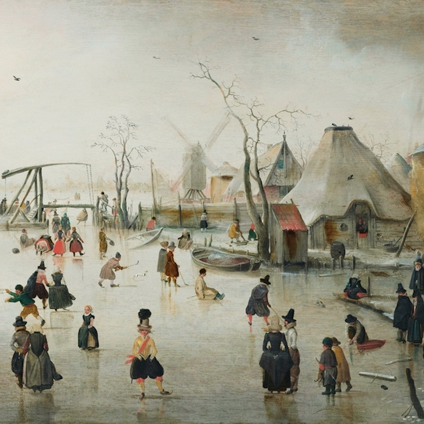
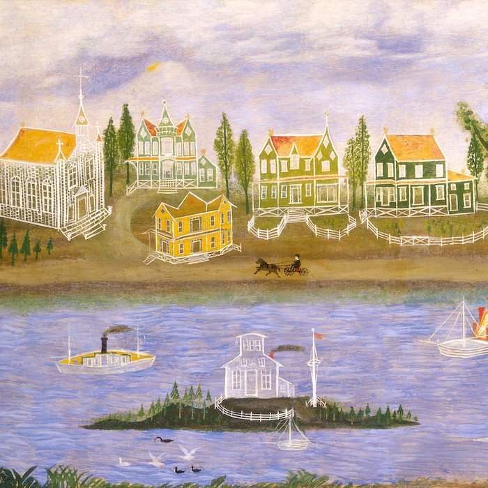
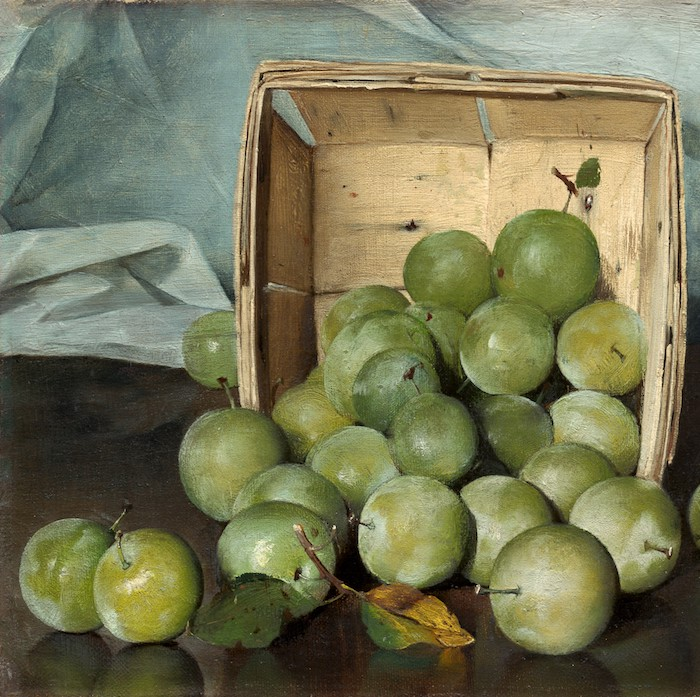

Working in Python but miss tidyverse syntax? These packages can help.
Or, why mtcars |> plot(hp, mpg) doesn’t work and what you can do about it.
mtcars |> plot(hp, mpg)

I ran into a cool paper where the authors create a dataset from an image with a Python package and then plot it with ggplot2. We can do that in a single R Markdown file thanks to the reticulate package.
I am now a Sr. Product Marketing Manager at RStudio!
Wikipedia has a lot of wonderful data stored in tables. Here’s how to pull them into R.

Generative art mixes randomness and order to create beautiful images. The #rtistry package helps find work from other Rtists.

Let’s explore some cool charts we can make in {ggplot2}.
Lessons learned when we used {bookdown} to prepare a manuscript to submit for publishing.
Setting up a Google Docs-like coding environment in VS Code.
Tired of trying to search all your liked Tweets on your timeline? Pull them into R instead!
Thanks to contributions from Daniel Anderson, {leaidr} is even easier to use.

Celebrating the R community. Originally posted on RViews.

Census data is valuable, but can be stored in messy Excel spreadsheets.
The {leaidr} package helps us easily create maps of U.S. school districts.
Recommendations for when you want to submit a package to CRAN.
My frequently-used reference for styling {ggplot2} charts.

What’s the most common type of district in the U.S.? Let’s find out using R.
I got my hands on a bunch of GPX files.

Most of the time, data doesn’t come in tidy spreadsheets. With R, though, you can pull data from PDFs to use in analyses.
Exploring why disaggregation of data is important by looking at district demographics.
My advice to aspiring data scientists and analysts entering these programs.